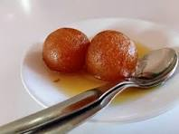
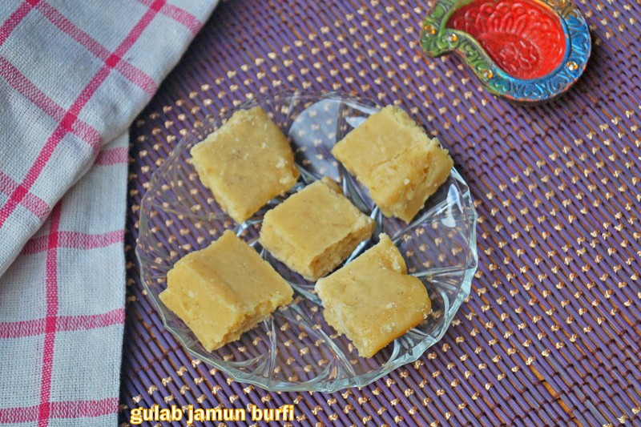

Gulab jamun
Ingredients
- sugar
- bread
- oil
Recipe
- Boil sugar and water to prepare syrup remove from fire. Add cardamom and keep aside to cool.
- In a mixing bowl put the flour, paneer, sooji, Nestlé MILKMAID, baking powder and baking soda. Mix gently to make a soft dough. Do not knead too much.
- Divide the mixture into 30-35 portions and gently roll into round gulab jamuns. Fry in the oil at very low flame till golden brown in color.
- Keep putting the fried gulab jamuns in the prepared sugar syrup. Once all the gulab jamuns are in the sugar syrup bring it to a boil and remove from flame.

Barfi jamun
Ingredients
- 1 cup Gulab Jamun Mix
- 3/4 cup sugar
- 1/2 tsp Cardamom Powder
- 2 tsp Ghe
- 6 number Cashew Nuts
Recipe
- In a pan add sugar.Add water.Once it reaches one string consistency, add cardamom powder.
- Add gulab jamun mix now.Mix well
- A lump free mixture will form now.Add ghee now.
- Wait till it is mixed properly.Once it is cooked see that it does not stick to the bottom of the pan.In a greased plated with ghee transfer the mixture.

Click here to view details.